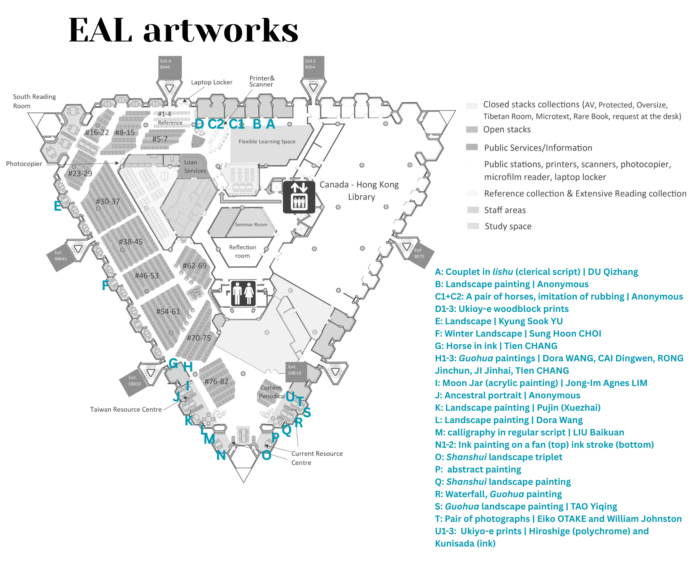

Chinese Art Masterpieces in Print: History, Lineage, Legacy
傳承經典: 中國古代書畫名作復刻品
Song 宋: LI Gonglin 李公麟 | SU Hanchen 蘇漢臣 | XIA Gui 夏圭
Yuan 元: ZHAO Mengfu | HUANG Gongwang
Ming 明: SHEN Zhou 沈周 | WEN Zhengming 文徵明 | TANG Yin 唐寅 | QIU Ying 仇英
Facsimile
Fac·sim·i·le noun
an exact copy, especially of written or printed material.
Miao 描 Tracing of the original.
Mo 摹/模 Copying of the original, usually in close likeness.
Lin 臨 To make a copy of the original, from close observation.
Fang 仿 Imitation in the style or mode of the original.
Format and Medium in Chinese Visual Art
Historically, as works of art, Chinese painting and calligraphy were mainly created on silk or paper and mounted into albums or scrolls. Other kinds of format and medium, like the mural, fan, and screen were also widely used in various times, but the album leaf 冊頁, handscroll 卷, and hanging scroll 軸 were arguably the most common formats.
Among these formats, the handscroll is perhaps the most unique, as it prescribes an intimate and non-static viewing practice. The viewer holds the scroll in both hands and reveals the content about an arm’s length at a time, moving through the image as if watching a roll of film. The speed and direction of view is always in control of the viewer.
Watch a video of the handscroll here
San Jue 三絕 "Three Perfections"
Along the rise of the Wenren 文人 Literatus Class in the Song dynasty, three art forms, poetry, calligraphy, and painting became the most venerated literati arts, coined as Sanjue 三絕, the "Three Perfections". We can understand the Literati Arts as "fine art", as highly cultured intellectual pursuit for the learned.
Using the same ink, brush, and silk or paper, calligraphy and painting were seen to be of the same morphological and aesthetic roots. Poetry and painting were also connected by the literati: Northern Song scholars like SU Shi 蘇軾 (1037-1101) coined that "poetry is voiced painting, painting is silen poetry 詩是無聲畫 畫是有聲詩", and Emperor Huizong 宋徽宗 (ZHAO Ji 趙佶, 1082-1135)'s active promotion of the painting-poetry pairing especially entranched this artistic tradition.
In artistic creations of literati men and women of premodern China, we can frequently see the Three Perfections in combination: paintings are often inscribed with poems written in elegant calligraphy.
Chinese calligraphy includes six major types of scripts: 篆 Zhuan (Seal Script), 隸 Li (Clerical Script), 楷 Kai (Regular/Standard Script), 行 Xing (Running Script), and 草 Cao (Cursive Script), arranged from earlier to later in their chronology of appearance.
Chinese painting covers a wide range of subject matters, but the type of painting are usually categorized by the use of ink and colour: 水墨 shuimo (monochrome ink), or 設色/著色 shese/zhuose (polychrome). Usually, ink paintings are more freely expressive, or sketchy and spontaneous, than polychrome paintings, which are slowly worked with many layers of paint. The two contrasting painting styles are also named 寫意 Xieyi (“writing the idea”) and 工筆 Gongbi (“meticulous brushwork”), respectively, although a lot of Xieyi paintings do also use colour.
Historically, as works of art, Chinese painting and calligraphy were mainly created on silk or paper and mounted into albums or scrolls. Other kinds of format and medium, like the mural, fan 扇, and screen 屏/幛 were widely used in various times, although the album leaf, fan, handscroll 卷, and hanging scroll 軸 were the most common formats for the connoisseur.
Among these formats, the handscroll is perhaps the most unique, as it prescribes an intimate and non-static viewing practice. The viewer holds the scroll in both hands and reveals the content about an arm’s length at a time, moving through the image as if watching a roll of film. The speed and direction of view is always in control of the viewer.

A Palace Concert 唐人宮樂圖. National Palace Museum, Taipei 台北国立故宫博物院. https://theme.npm.edu.tw/selection/Article.aspx?sNo=04000957#inline_content_intro. Bai, Limin. “Children at Play: A Childhood Beyond the Confucian Shadow.” Childhood 12, no. 1 (2005): 9-32. Accessed Feb 5th, 2020. doi: 10.1177/0907568205049890. Barnhart, Richard M., Xin Yang, Chongzheng Nie, James Cahill, Shaojun Lang, and Hung Wu. Three Thousand Years of Chinese Painting. New Haven: Yale University Press; Beijing: Foreign Languages Press, 1997.
Benjamin, Walter. “The Work of Art in the Age of Mechanical Reproduction.” In The Visual Culture Reader, edited by Jessica Evans and Stuart Hall, 72–80. London: Sage Publications, 1999. Berry, David M., and Anders Fagerjord. Digital Humanities: Knowledge and Critique in a Digital Age. Polity, 2017. Bickford, Maggie. “Huizong’s Paintings: Art and the Art of Emperorship.” In Emperor Huizong and Late Northern Song China: The Politics of Culture and the Culture of Politics, edited by Patricia Buckley Ebrey and Maggie Bickford, 453–515. Cambridge, MA: Harvard University Asia Center, 2006. Brown, Claudia. Great Qing: Painting in China, 1644-1911. Seattle: University of Washington Press, 2014. Cahill, James. An Index of Early Chinese Painters and Paintings: Tʻang, Sung, and Yüan. Berkeley: University of California Press, 1980. Hills Beyond a River: Chinese Painting of the Yuan Dynasty, 1279–1368. New York and Tokyo: John Weatherhill, 1976. “The Imperial Painting Academy.” In Possessing the Past: Treasures from the National Palace Museum, Taipei, edited by Wen C. Fong and James C. Y. Watt, 159–199. New York: The Metropolitan Museum of Art; New Haven: Yale University Press, 1996. “The Yuan Dynasty (1271-1368).” In Three Thousand Years of Chinese Painting, by Yang Xin, Richard M. Barnhart, Nie Chongzheng, James Cahill, Lang Shaojun, and Wu Hung, 139-196. New Haven: Yale University Press, 1997. Parting at the Shore: Chinese Painting of the Early and Middle Ming Dynasty, 1368–1580. New York and Tokyo: John Weatherhill, Inc., 1978. Chen, Qin. “Study of Children at Play in an Autumn Garden by Su Hanchen.” Aesthetics, no. 6 (2009): 64-66, doi: 10.16129/j.cnki.mysdx.2009.06.036. Chen, Yan. “‘Revering the Song and Embracing the Yuan’: On the Compilation Principles of Gu Family Painting Catalogue [‘Chong Song yi Yuan’—Lun Gu shi huapu de shoulu yuanze].” Qilu Realm of Arts, no. 5 (2020): 61–64. (In Chinese). Chou, Ju-hsi, ed. Silent Poetry: Chinese Paintings from the Collection of the Cleveland Museum of Art. With contributions by Anita Chung. Cleveland: Cleveland Museum of Art; New Haven: Yale University Press, 2015. Di, Yongjun 邸永君. 2011. "San Xi Tang Xiao Shi 三希堂小史." Zi Jin Cheng 紫禁城 no. 10: 58. Dong, Yayuan. “Prints for Officials: The Imperial Farming and Weaving Pictures and Emperor Kangxi’s Tours to Southern China.” Art Magazine (Meishu) 2023, no. 2: 106–116. Dongguang, Fu. “雍正十二月行乐图轴.” www.dpm.org.cn, n.d. https://www.dpm.org.cn/collection/paint/228965.html Du, Mengrou 杜萌若. “Wang Xi's calligraphy and writing method 1 (王羲之行书笔法一).” The World of Chinese Painting and Calligraphy, no. 1 (2011): 78-81. Du Song. “Book Production and Producers in Early Modern Society: A Discussion Centered on the Late Ming Gu Family Painting Catalogue* [Zaoqi xiandai shehui de tushu zhizuo yu zhizuo zuozhe—yi wan Ming* Gu shi huapu* wei zhongxin de taolun].” Art Observation 10 (2024): 45–58. (In Chinese). Du Zhesheng 杜哲森. 2015. Zhongguo chuantong huihua shigang: Huamai wenxin liang zhenglu 中国传统绘画史纲：画脉文心两征录. Beijing: Renmin meishu chubanshe 人民美术出版社. Fong, Wen C. Images of the Mind: Selections from the Edward L. Elliott Family and John B. Elliott Collections of Chinese Calligraphy and Painting at the Art Museum, Princeton University. Princeton: Art Museum, Princeton University, 1984. Gugong Bowuyuan 故宫博物院. An Anthology of Qing Dynasty Court Paintings 清代宫廷绘画选集. Beijing: Zijincheng Chubanshe 紫禁城出版社, 2010. Hammers, Roslyn Lee. The Imperial Patronage of Labor Genre Paintings in Eighteenth-Century China. New York: Routledge, 2021. Hatorishoten Articles. “Lost Masterpiece Appears.” Hatori Press, Inc. Last modified April 7, 2019. https://www.hatorishoten-articles.com/fivehorses.html Hay, A. John. 1978. Huang Kung-wang's "Dwelling in the Fu-ch'un Mountains": the Dimensions of a Landscape. Ph.D. Dissertation, Princeton University. Ann Arbor: University of Michigan Press. He, Chuanxin, ed. Portrayals from a Brush Divine: A Special Exhibition on the Tricentennial of Giuseppe Castiglione's Arrival in China. Taipei: National Palace Museum, 2015. He, Wenlue 賀文略. Song huizong Zhao Ji huaji zhen wei an bie宋徽宗趙佶畫跡真偽案別 [The Paintings of Zhao Ji, Emperor Huizong of Song: Problems of Authentication]. Hong Kong: 中國古代書畫鑒賞學會 [Society for Connoisseurship of Ancient Chinese Painting and Calligraphy], 1992. Hearn, Maxwell K. Chinese Painting and Calligraphy at The Metropolitan Museum of Art. New York: Metropolitan Museum of Art, 2002. Li Gonglin, and Masaaki Itakura. Ri Kōrin "Gobazu" = Li Gonglin Five Horses. Haitori Press, 2019. Lewis, Mark Edward. China’s Cosmopolitan Empire: The Tang Dynasty. Cambridge, Mass: Belknap Press of Harvard University Press, 2009. Liu, Ning. “Yang, Lady of Guo State.” In Biographical Dictionary of Chinese Women, Volume II: Tang Through Ming 618-1644, edited by Lily Xiao Hong Lee and Sue Wiles, 540-1. London & New York: Routledge, 2015.Louis, François. “THE ‘PALACE CONCERT’ AND TANG MATERIAL CULTURE.” Source: Notes in the History of Art 24, no. 2 (2005): 42–49. Luo, Jun. “Tu hui shi jian chuan tong xiang xin shi jue si wei de zhuan bian : yi “Qing yuan hua shier yueling tu” wei li 图绘时间传统向新视觉思维的转变: 以《清院画十二月令图》 为例.” Humanities & Social Sciences Journal of Hainan University, no. 1 (2017): 126–34. National Palace Museum. 2025. “Embracing Sites: A Journey through the National Palace Museum’s Collections.” Accessed March 18, 2025. https://theme.npm.edu.tw/exh109/EmbracingSites/en/page-3.html. “Northern Song copy of Zhang Xuan’s Lady Guoguo’s Spring Outing 北宋摹张萱虢国夫人游春图卷.” Liaoning Provincial Museum, Shenyang 辽宁省博物馆. www.lnmuseum.com.cn/#/collect/detail?id=21010302862117A000061&pageType=3. Qi, Xiaochun 祁小春. “Discovery of Wang Xizhi's Calligraphy and Its Development(王羲之书迹探原及其展开).” Art Journal, no. 5 (2011): 76-87. Qian, Weibiao 钱魏彪. “The Era of Calligraphy——Review of Calligraphy Since Jin Dynasty and Reflection on Contemporary Calligraphy (书法的时代性——晋以来书法回顾及对当代书坛的反思).” Calligraphy Magazine, no. 6 (2020): 84-95. Rawski, Evelyn S., and Jessica Rawson, eds. China: The Three Emperors, 1662-1795. London: Royal Academy of Arts, 2005. Shen, Xin 沈歆. “Mode of copying and model function of Ming dynasty painting albums–taking Master Gu’s Painting Album as example 明代集古画谱的临仿模式与粉本功能——以《顾氏画谱》为中心.” Meiyuan美苑 2011 (3): 75-82. Sullivan, Michael. The Arts of China. 6th ed. Berkeley: University of California Press, 2018. Tian, Xu. “Shang 商 c. 1600-1046 BCE
Zhou 周 c. 1046-256 BCE
Qin 秦 c. 221-206 BCE
Han 漢 c. 206 BCE-220 CE
Six Dynasties 魏晉南北朝 c. 220-589 CE
Sui 隋 c. 581-618 CE
Tang 唐 c. 618-906 CE
Five Dynasties 五代 c. 907-960 CE
Song 宋 c. 960-1279 CE
Yuan 元 c. 1279-1368 CE
Ming 明 c. 1368-1644 CE
Qing 清 c. 1644-1912 CE